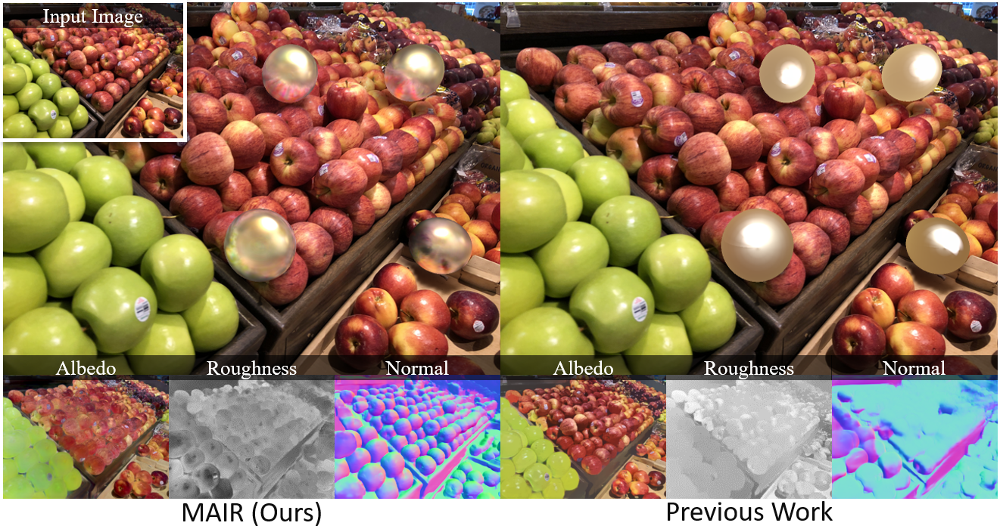
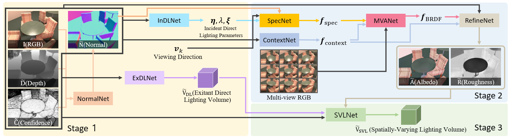
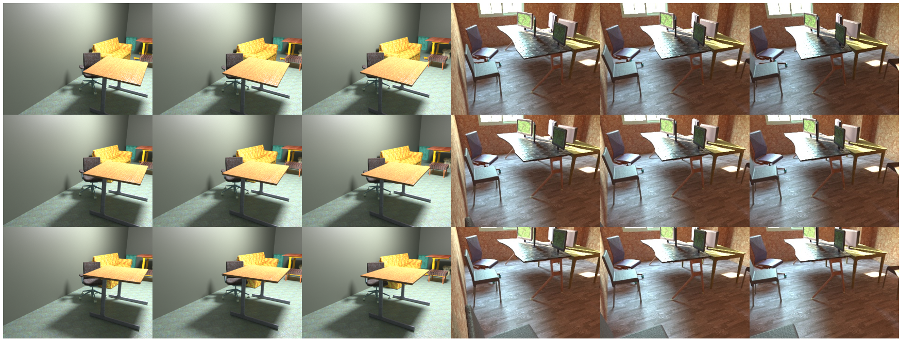
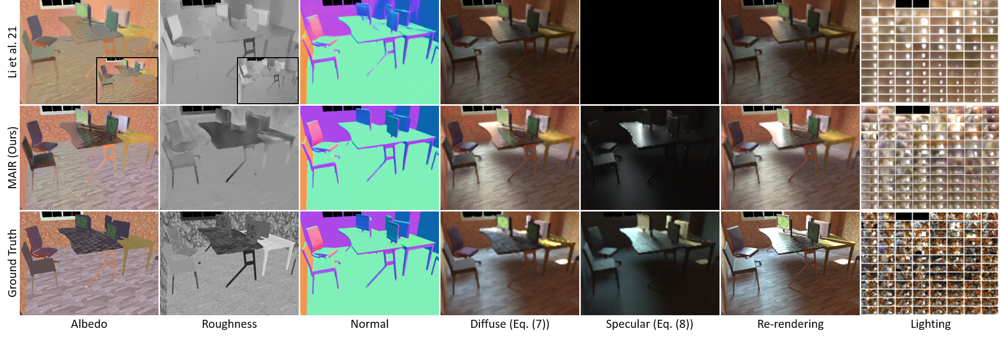
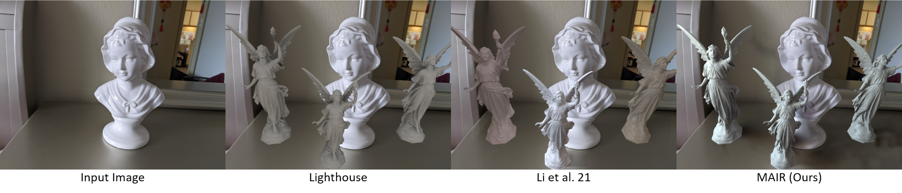
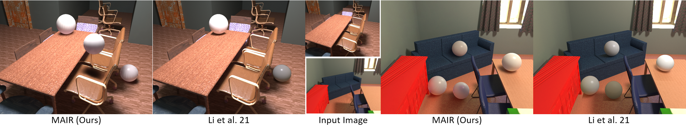

MAIR: Multi-view Attention Inverse Rendering
with 3D Spatially-Varying Lighting Estimation
CVPR 2023
- JunYong Choi 1,2
- SeokYeong Lee 1,2
- Haesol Park 1
- Seung-Won Jung 2
- Ig-Jae Kim 1,3,4
- Junghyun Cho 1,3,4
- 1Korea Institute of Science and Technology(KIST)
- 2Korea University
- 3AI-Robotics, KIST School, University of Science and Technology
- 4Yonsei-KIST Convergence Research Institute, Yonsei University

Overview
We propose a scene-level inverse rendering framework that uses multi-view images to decompose the scene into geometry, a SVBRDF, and 3D spatially-varying lighting. Because multi-view images provide a variety of information about the scene, multi-view images in object-level inverse rendering have been taken for granted. However, owing to the absence of multi-view HDR synthetic dataset, scene-level inverse rendering has mainly been studied using single-view image. We were able to successfully perform scene-level inverse rendering using multi-view images by expanding OpenRooms dataset and designing efficient pipelines to handle multi-view images, and splitting spatially-varying lighting. Our experiments show that the proposed method not only achieves better performance than single-view-based methods, but also achieves robust performance on unseen real-world scene. Also, our sophisticated 3D spatially-varying lighting volume allows for photorealistic object insertion in any 3D location.
Pipeline
OpenRooms FF, Multi-view extension of OpenRooms
Comparisons


Object Insertion
View Synthesis + Chrome Sphere Insertion
Acknowledgments
This work was partly supported by Institute of Information & communications Technology Planning & Evaluation (IITP) grant funded by the Korea government(MSIT)(No.2020-0-00457, 50%) and KIST Institutional Program(Project No.2E32301, 50%).Images used for object insertion were imported from IBRNet. The view synthesis results were created using DirectVoxGo. The website template was borrowed from Michaël Gharbi and OpenRooms (Zhengqin Li).